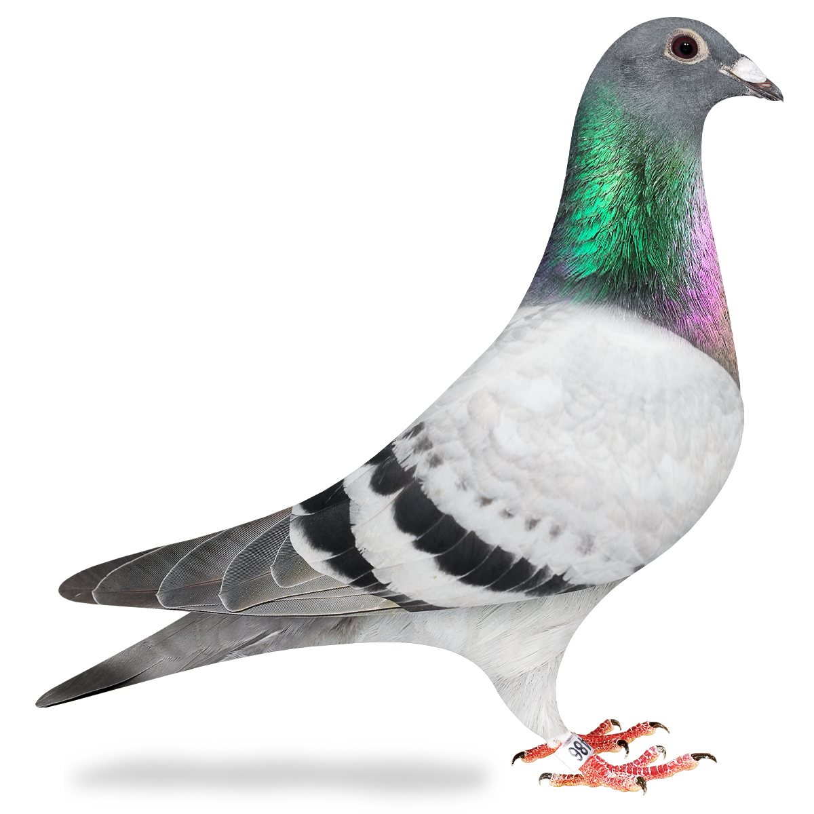

Kweekprofiel
GB25-D54486 · Mr. R. Fenech & Son

Blizzard / Kittel
GB25-D54486
Fenech is een rechtstreekse doffer uit de hokken van Mr. R. Fenech & Son, opgebouwd rond de Blizzard- en Kittel-familie.
Beschikbaar beeldmateriaal van Fenech.

Eén duidelijke stamboom per duif, zodat de pagina rustig en professioneel blijft.